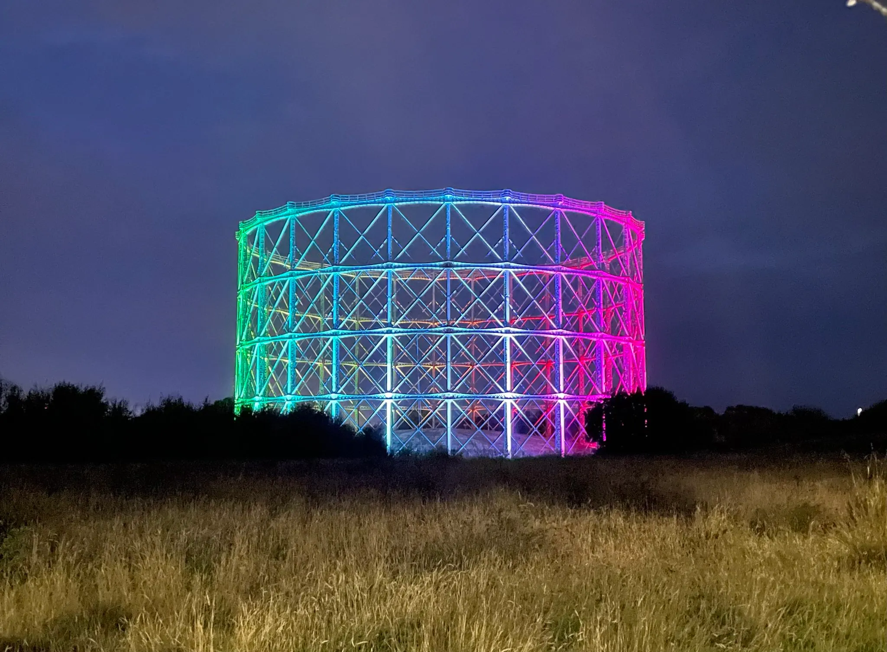
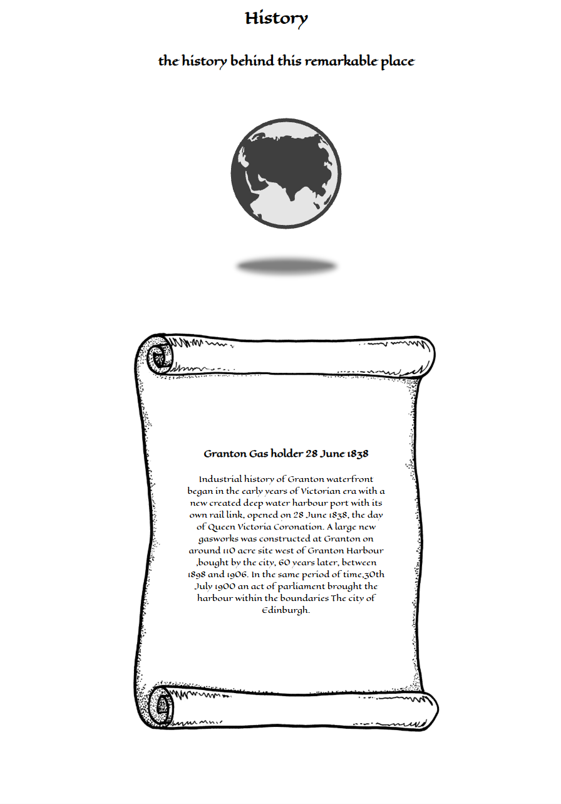
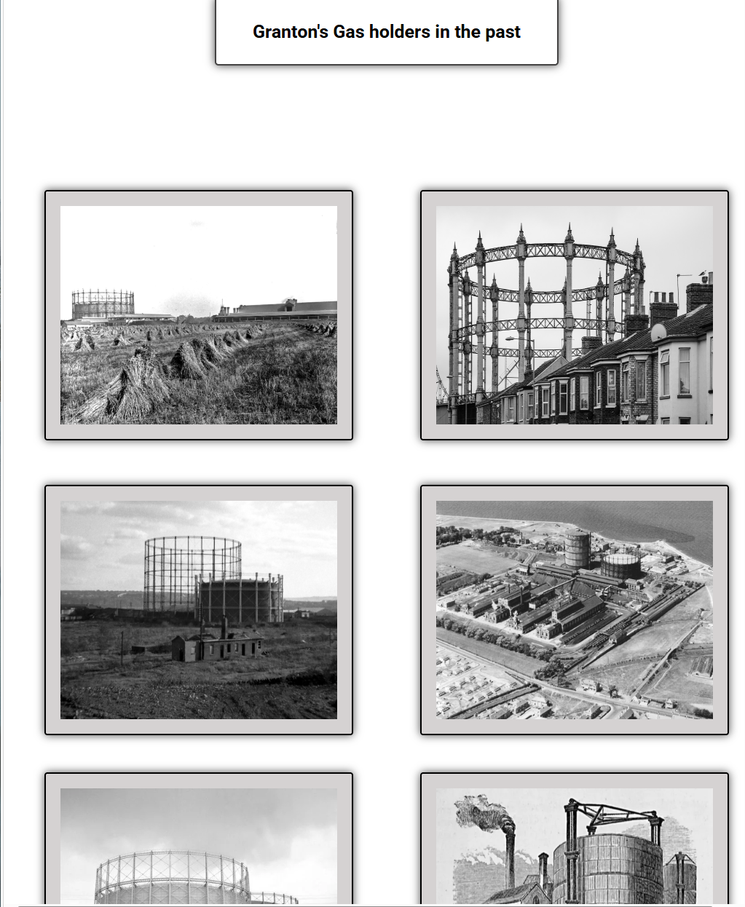
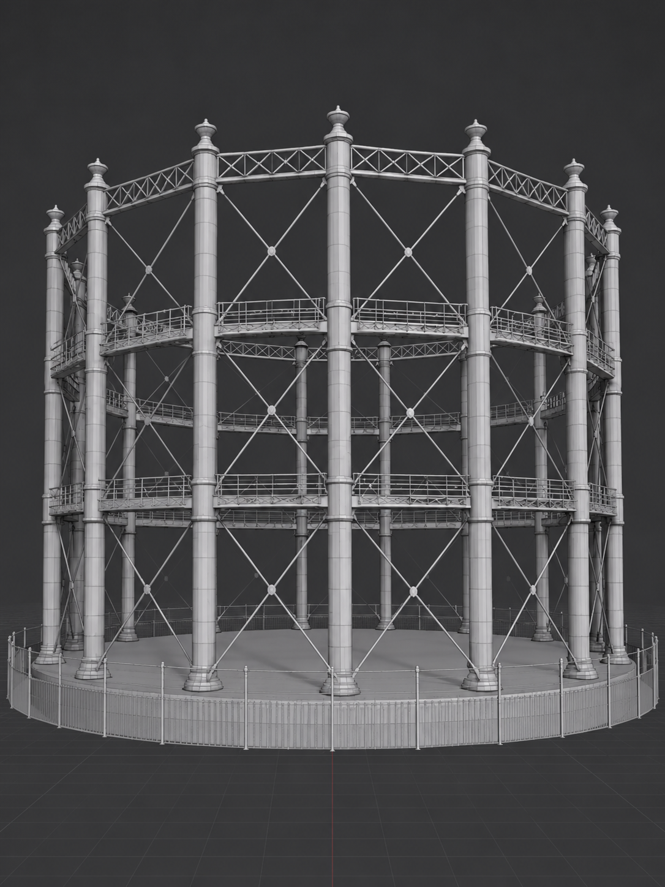

3D MODELLING | Blender
Granton Gas Holder
A collaborative 3D modelling project developed using Unity.
About the Project
Granton Gas Holder was a collaborative project developed using Blender,HTML, CSS and JavaScript, focusing on creating a 3D representation of a real-world structure.
Building the Model
A closer look at the process and the final project.



Collaboration & Teamwork
This project was developed collaboratively. Working together allowed us to share ideas, contribute to the modelling process and gain experience working as a team.
What I Learned
- Working with Blender.
- Experience with 3D modelling.
- Collaborative project development.
- Exploring digital environments.